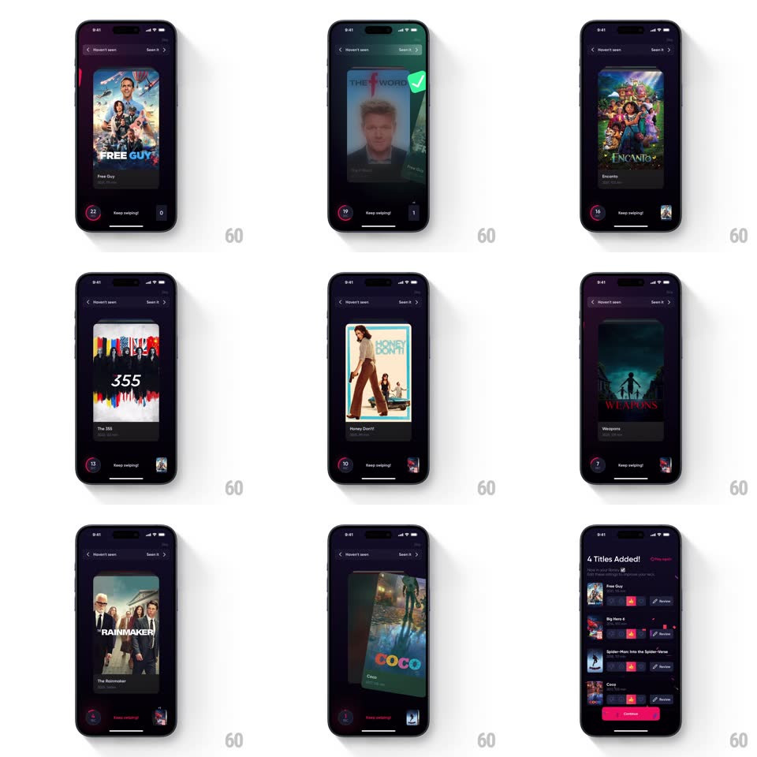

Media
Frame-by-frame

Rebuild this interaction 1:1: Queue's seen-it swipe game - flick poster cards right ("Seen it") or left ("Haven't seen") against a countdown ring; seen titles pile up at bottom-right, and at zero a confetti recap lists what you added.

Rebuild this interaction 1:1: Queue's seen-it swipe game - flick poster cards right ("Seen it") or left ("Haven't seen") against a countdown ring; seen titles pile up at bottom-right, and at zero a confetti recap lists what you added.
## Integration
Integration: stack-agnostic spec - springs given as stiffness/damping, timed motions as duration + curve; map every value to your framework and animation library of choice.
## Scene
Dark screen: top bar with "< Haven't seen" and "Seen it >", a centered poster card with title and year, a bottom-left circular countdown ("25" down to "0") with "Keep swiping!" label, and a bottom-right pile where seen posters collect. End: "4 Titles Added!" recap with confetti, added-title rows with Review buttons, and a pink Continue button.
## Motion spec
Pattern: physics card-flick with collection pile, gesture-driven.
- Drag: the card follows 1:1, rotating with horizontal velocity (+-15deg); edge labels glow as you near a threshold.
- Flick: release past threshold launches the card off-screen (flick velocity, 300ms); a right flick's poster shrinks and arcs into the bottom-right pile (400ms, ease-in) stacking with slight random rotation (+-8deg).
- Deal: the next card scales up from the deck (0.95 -> 1, 200ms) as the previous exits; the countdown ticks each card.
- Finale: at zero the last card exits, confetti falls (2s, gravity + flutter), and the recap sheet slides up (spring ~340/24) with rows cascading (50ms stagger).
## Calibration
- The pile shows the last ~3 seen posters fanned; count beyond that keeps stacking underneath.
- Timer counts cards, not seconds.
## Reduced motion
Cards slide off without rotation; confetti replaced by a static sparkle; recap fades in.
## Don't miss
- The arc into the pile is what makes right-swipes feel collected - keep it distinct from the left exit.
- The recap numbers must match the seen pile exactly.